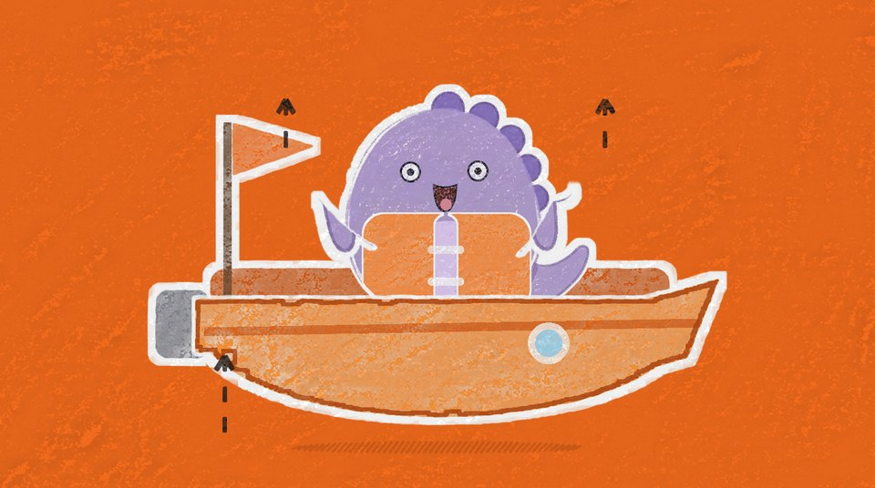
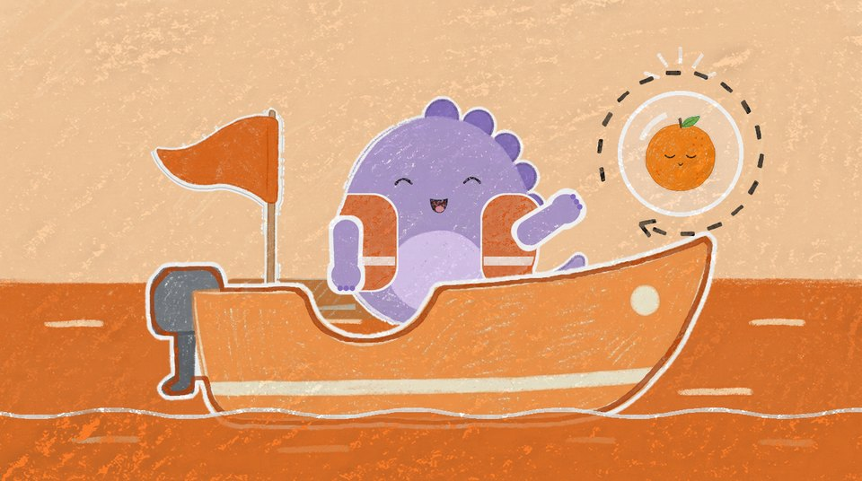
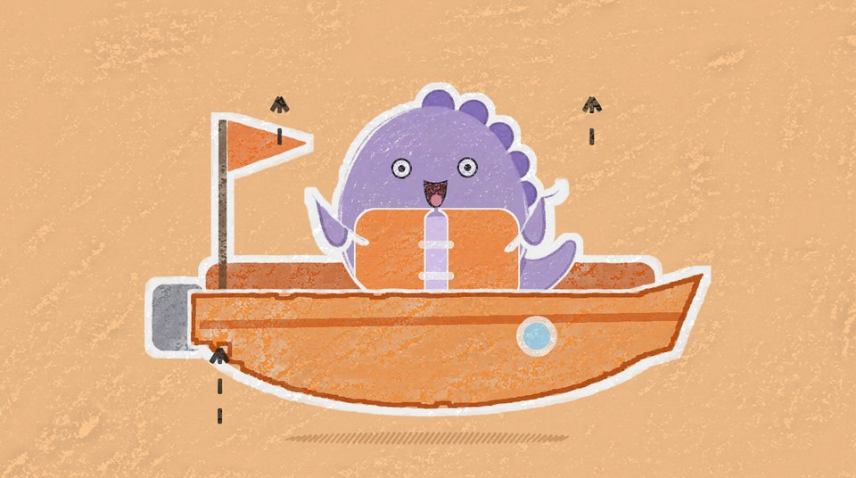
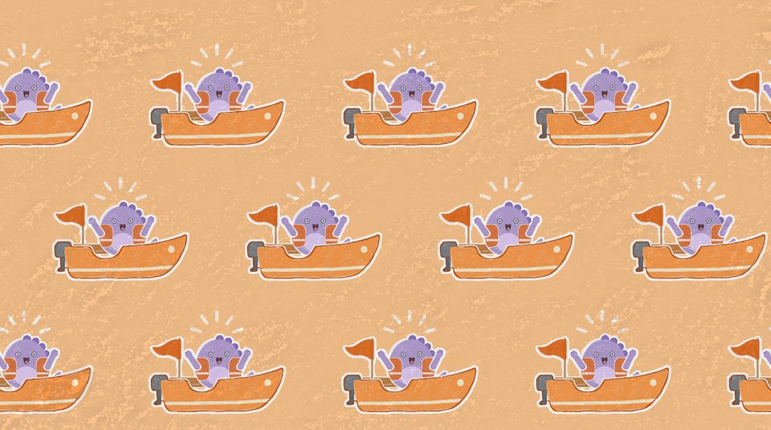
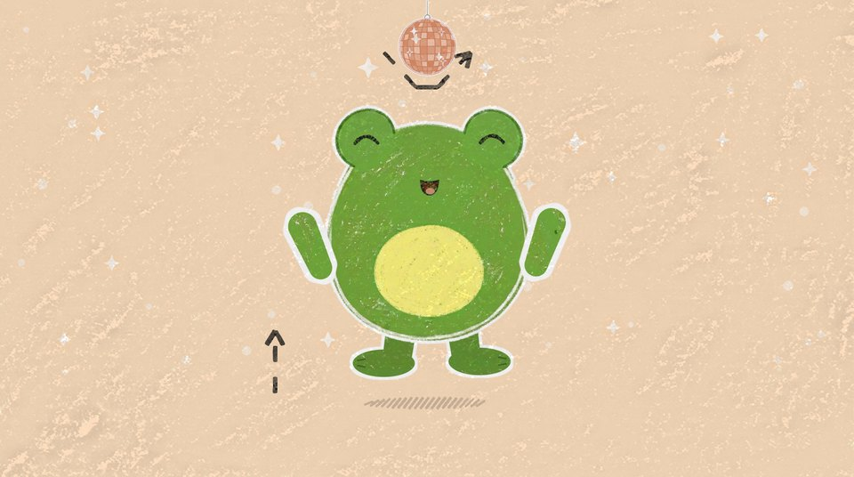
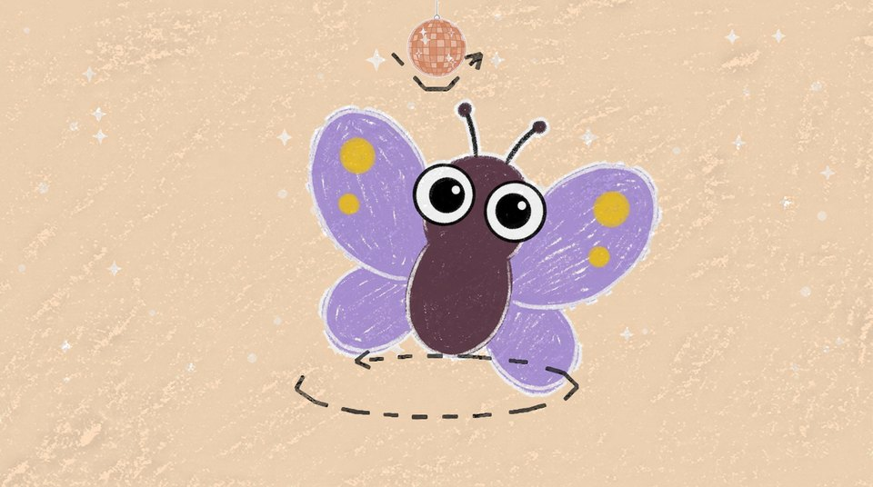
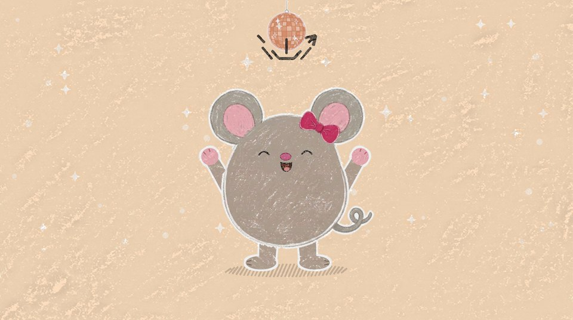
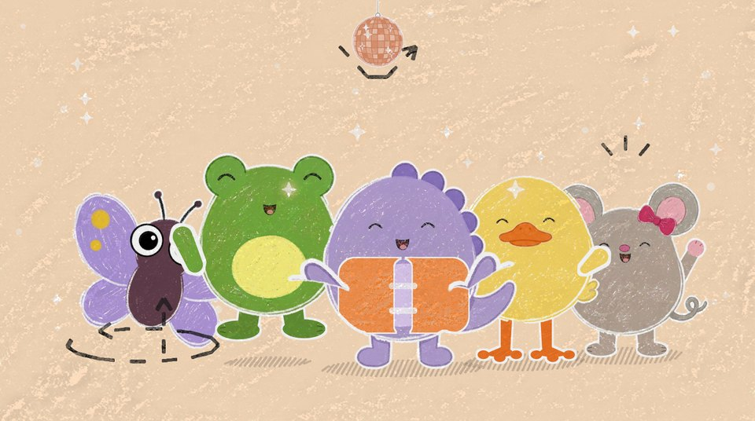
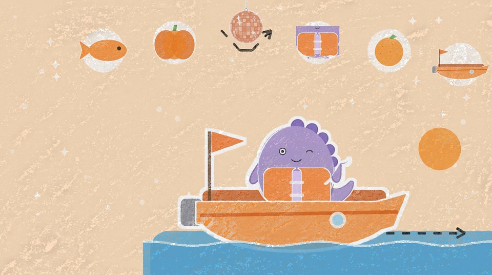
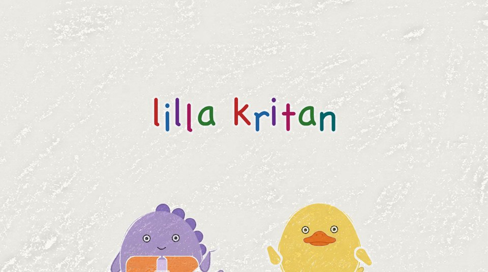

Orange sången storyboard
Avsnitt 006, utkast. Bilderna är byggda av utklippen i assets/ med ansiktena ritade i kod; det som inte finns än är platta former i rätt färg. Pilarna och strecken visar rörelsen.
Intro

(titeln syns, ingen röst)
Samma intro som 003–005 med nytt nummer och ny titel: Avsnitt 6 · Orange sången. Ljusblå vägg och en liten orange båt på kortet. (Bilden här är ritad i bygg.py; introt renderas som 005:s när det görs.)
fastKritan ritar

(skrrrrt)
”Kritan ritar, orange, lång …”: kritan ritar ett orange, rundat skrov, långsamt. Bara skrovet.
1 papper
(skrrt, skrrt)
”vad kan det vara?”: en liten pinne med en orange flagga och en vågig blå linje under skrovet, medan det sjungs.
1 papper
(skrrt)
”Vad kan det vara?” och pausen: kritan ritar ett runt litet fönster (ventil), den sista ledtråden.
1 papper
(tut-tut)
”En båt! En orange båt! Tut-tut, nu kör vi!”: båten gungar till på vågen och kritan lyfter.
1 papperA · Sjön

(swoosh)
Zoom in i den ritade båten: den blir Disas båt på sjön. Disa sitter redan i båten med flytvästen på. Mellanspelet börjar.
zoom in
DISA: Hej hej!
Disa vinkar till tittaren. Grooven startar, instrumentalt. Inget talat ”Tut-tut, nu kör vi!”: det sjöngs nyss.
3 närbild Disa
Hon lägger tassarna på båtens kant och tittar framåt.
3 närbild Disa
(putt, putt)
Mellanspel och vers 1 rad 1–2. Sjön glider, båten gungar på vågorna med kölvatten bakom, en orange sol långt bort. Fjärilen Fia fladdrar förbi högt uppe, den enda rörelsen i bakgrunden.
2 körscen
”Dinon letar orange nu, leta med – jag och du!”: samma körscen, Disa sätter handen över ögonen och spanar framåt.
2 körscenRefräng

Refrängdansen, likadan alla tre gångerna (se sang.md). Rad 1–2 ”Orange! (Orange!) Orange! (Orange!)”: dansbild. Disa sträcker båda armarna rakt upp och båten gungar upp på en våg i takt. Orange blixt: på rösten ”Orange!” byts bakgrunden med ett hårt klipp till klarorange (#F26B1D); vattnet och himlen försvinner och bara Disa, båten och skuggan står på orange. Båten har en mörkorange kontur.
6 dansbild (orange blixt)
Ekot ”(Orange!)”: samma dans, bakgrunden blixtrar till ljusorange (#FAC48E). Mellan raderna är det sjön igen, så rad 1–2 blinkar rop, eko, rop, eko.
6 dansbild (orange blixt)
Rad 3 ”Orange är bästa färgen!”: närbild, händerna på magen (på flytvästen), hon gungar åt sidorna i reggaetakten.
3 närbild Disa
(pop: fyra)
Rad 4–5 ”Orange! (Orange!) Orange! (Orange!)”: samma blixt, och nu blir Disa fler. På rösten, klarorange: Disa i båten poppar till fyra i ett rutnät 2 × 2, alla på en gång. Alla gungar i takt med armarna upp.
6 dansbild (orange blixt)
(pop: mönstret)
Ekot ”(Orange!)”, ljusorange: de poppar igen till ett helt mönster av dinos i båtar, 4 × 3 med varannan rad förskjuten ett halvt steg som ett tryck. Samma utklipp och ansikte i alla, renderade en gång.
6 dansbild (orange blixt)
(plopp)
Rad 6 ”Som apelsin och pumpa!”: en Disa igen. Klipp till jättepumpan mot ljusblå himmel, ca 2/3 av bildhöjden. Disa står på toppen (ca 27 % av bildhöjden), sätter ner båtens orange flagga (plopp), flaggan fladdrar och hon sträcker armarna upp och jublar.
6 dansbild (jättepumpan)
(tut, tut: mistluren)
Rad 7 ”Tut, tut, tut, tut”: dansbild, båten gungar två gånger på de första ”tut, tut”, och på de sista gör Disa två små knytnävspumpar. Tutet är båtens mistlur.
6 dansbild
Rad 8 ”vad är orange? Titta ut!”: närbild, handen över ögonen, hon tittar åt ena hållet och sedan åt det andra.
3 närbild DisaA · Sjön

(plask)
”Vad är orange?”: en orange fisk hoppar upp ur vattnet framför båten i en båge. Disa blir förvånad och tittar dit.
2 körscen
”Titta där! Fisken är orange”: sjön stannar och Disa pekar på fisken.
2 körscen
(plask, plask, plask)
”plask, plask, plask”: närbild, fisken hoppar tre gånger i en båge bredvid båten, och Disa klappar en gång per plask.
3 närbild Disa
”Vad är orange?”: sjön glider igen, fisken är borta, en stor pumpa på stranden glider in från höger.
2 körscen
”Titta där! Pumpan är orange”: sjön stannar och Disa pekar på pumpan.
2 körscen
”stor, stor, stor”: närbild, Disa sträcker ut armarna, lite bredare för varje ”stor”. Pumpan syns bakom.
3 närbild Disa
”Vad mer är orange? Kan du se?”: frågan till tittaren. Disa tittar ut mot tittaren med frågande min.
3 närbild Disa
Pausen, ca 4 s. Ledtråd: Disa tittar ner på sin mage, och kameran åker in långsamt och mjukt till ca 1,5× mot den orange flytvästen. Inåkningen är det enda som rör sig. Bilden visar slutläget; pilarna visar inåkningen.
3 närbild Disa, inåkning
”Västen är orange – och flaggan med!”: Disa klappar på västen och pekar bakåt på båtens orange flagga.
3 närbild Disa
(dunk, dunk, dunk)
”Dunk, dunk, dunk!”: hon stampar tre gånger så att båten gungar.
3 närbild DisaRefräng

Refrängdansen, likadan alla tre gångerna (se sang.md). Rad 1–2 ”Orange! (Orange!) Orange! (Orange!)”: dansbild. Disa sträcker båda armarna rakt upp och båten gungar upp på en våg i takt. Orange blixt: på rösten ”Orange!” byts bakgrunden med ett hårt klipp till klarorange (#F26B1D); vattnet och himlen försvinner och bara Disa, båten och skuggan står på orange. Båten har en mörkorange kontur.
6 dansbild (orange blixt)
Ekot ”(Orange!)”: samma dans, bakgrunden blixtrar till ljusorange (#FAC48E). Mellan raderna är det sjön igen, så rad 1–2 blinkar rop, eko, rop, eko.
6 dansbild (orange blixt)
Rad 3 ”Orange är bästa färgen!”: närbild, händerna på magen (på flytvästen), hon gungar åt sidorna i reggaetakten.
3 närbild Disa
(pop: fyra)
Rad 4–5 ”Orange! (Orange!) Orange! (Orange!)”: samma blixt, och nu blir Disa fler. På rösten, klarorange: Disa i båten poppar till fyra i ett rutnät 2 × 2, alla på en gång. Alla gungar i takt med armarna upp.
6 dansbild (orange blixt)
(pop: mönstret)
Ekot ”(Orange!)”, ljusorange: de poppar igen till ett helt mönster av dinos i båtar, 4 × 3 med varannan rad förskjuten ett halvt steg som ett tryck. Samma utklipp och ansikte i alla, renderade en gång.
6 dansbild (orange blixt)
(plopp)
Rad 6 ”Som apelsin och pumpa!”: en Disa igen. Klipp till jättepumpan mot ljusblå himmel, ca 2/3 av bildhöjden. Disa står på toppen (ca 27 % av bildhöjden), sätter ner båtens orange flagga (plopp), flaggan fladdrar och hon sträcker armarna upp och jublar.
6 dansbild (jättepumpan)
(tut, tut: mistluren)
Rad 7 ”Tut, tut, tut, tut”: dansbild, båten gungar två gånger på de första ”tut, tut”, och på de sista gör Disa två små knytnävspumpar. Tutet är båtens mistlur.
6 dansbild
Rad 8 ”vad är orange? Titta ut!”: närbild, handen över ögonen, hon tittar åt ena hållet och sedan åt det andra.
3 närbild DisaKritsvep

(skrrrrt)
Kritsvep i bryggans ljusblå (#A8DCF2), från vänster till höger, precis innan ”Vad är orange?”.
kritsvepB · Bryggan

(putt, putt)
”Vad är orange?”: Agda sitter på bryggkanten med fruktkorgen bredvid sig. Båten puttrar in från vänster.
4 helbild
”Titta där! Apelsinen är orange”: båten har lagt till nedanför Agda och Disa pekar på apelsinen i korgen. Kameran glider långsamt in mot korgen (platsens enda kamerarörelse); bilden visar slutläget.
4 helbild
”rund, rund, rund”: närbild, Disa ritar en cirkel i luften med tassen.
3 närbild Disa
DISA: Hej, ankan! · AGDA: Kvack! Hej, Disa! Vad vill du ha?
Lucka i sången, ca 6,8 s, grooven fortsätter under. Närbild Agda med korgen: apelsinen (närmast Disa), det gröna äpplet och den gula bananen. Färgövningen: tre färger, Disa väljer.
5 närbild Agda
DISA: Apelsin, tack!
Disa pekar på apelsinen.
4 helbild
AGDA: Varsågod! · DISA: Tack! (pling)
Agda räcker ner apelsinen från bryggan och Disa tar emot den. Äpplet och bananen ligger kvar i korgen.
4 helbild
(plask!)
Vers 2. ”Oj, oj, plask”: tvåbild, ett närmare utsnitt av helbilden. Apelsinen glider ur Disas tassar och plaskar i vattnet bredvid båten. Båda blir förvånade.
4 tvåbild (helbilden närmare)
”– där flöt den bort!”: samma tvåbild, apelsinen guppar bort åt höger på vågorna. Disa blir lite ledsen, bara en kort stund.
4 tvåbild (helbilden närmare)
(plask, kvack, kvack, kvack)
”Ankan simmar, kvack, kvack, kvack!”: Agda har hoppat i och simmar tillbaka med apelsinen på näbben. Ringar på vattnet efter henne.
4 tvåbild (helbilden närmare)
”En halva var – till dig och mig!”: Agda sitter på bryggan igen och har delat apelsinen. Hon håller en halva och Disa en: en halva var.
4 tvåbild (helbilden närmare)
”Mums, mums, mums”: båda äter sin halva, en tugga per ”mums”.
4 tvåbild (helbilden närmare)
”– hurra, hurra!”: båda sträcker armarna upp. Apelsinen är slut, så händerna är fria till dansen.
4 tvåbild (helbilden närmare)Danspaus · discot

(boing!)
”Danspaus!”: klipp till discot, ljusorange med en orange discokula som snurrar sakta och kastar ljusprickar. Disa är ute ur båten och dansar stor mitt i bild med armarna upp, med ett litet stjärnregn runt sig.
6 dansbild (discot)
(boing!)
”(Danspaus!)”, ekot: Agda hoppar in och landar bredvid henne, båda lite mindre (samma bild utan klipp).
6 dansbild (discot)
”Hoppa, hoppa!”: solobild, grodan Gurra ensam och stor mitt i bild, hoppar, stjärnregn runt honom.
6 dansbild (discot)
(fladder)
”Snurra runt!”: solobild, fjärilen Fia snurrar i luften, stjärnregn runt henne.
6 dansbild (discot)
(klapp, klapp)
”Klappa, klappa!”: solobild, musen Mille klappar med armarna upp, stjärnregn runt henne.
6 dansbild (discot)
”Alla dansar – orange dans!”: alla fem i ett svagt V, Disa i mitten lite större och ett steg fram, Gurra och Agda bredvid, Fia och Mille ytterst. Disa och Agda har armarna upp, statisterna gör sin rörelse.
6 dansbild (discot)
”Orange dans!” upprepas: samma rad, Disa och Agda gungar med händerna på magen.
6 dansbild (discot)
(pop)
Sista refrängen i discot, en snabb solobild per sak. ”Fisken – orange!”: grodan hoppar och fisken hoppar bredvid honom; fisken poppar upp som första småbild i bågen.
6 dansbild (discot)
(pop)
”Pumpan – orange!”: solobild, musen klappar bredvid pumpan. Pumpan poppar upp i bågen.
6 dansbild (discot)
(pop, pop, pop)
”Väst och apelsin och båt – orange!”: solobild, Disa hoppar med armarna upp. Västen, apelsinen och båten poppar upp i bågen, en per ord.
6 dansbild (discot)
”Orange är bästa färgen”: alla fem igen i raden, Disa och Agda med händerna på magen.
6 dansbild (discot)
(plopp)
”som apelsin och pumpa!”: klipp till jättepumpan, samma bild som 05d och 09d. De andra fyra är inte med.
6 dansbild (jättepumpan)
(tut, tut)
”Hej då, hej då – tut, tut!”: kvar i discot, under bågen med småbilderna. Disa sitter i båten på ett litet stycke blått vatten och puttrar iväg åt höger mot en orange sol och vinkar; tutet är båtens mistlur. De andra har dansat ut ur bild. Outrot i sången kortas till ca 4 s här.
6 dansbild (discot)Avslutning

(swoosh)
Zoom ut: discot krymper till en teckning på papperet: Disa i den orange båten under den orange solen, med småbilderna i en båge ovanför.
zoom utOutro

Det vanliga outrot. Disa och Agda tittar fram vid kanten och vinkar.
fastAnteckningar
- Ingen säger det som sjungs. Ekot sjungs av kören. Varje orange sak har en rörelse i bild i stället för en replik: plask (06b), stor (07b), dunk (08c), rund (11b).
- Refrängen är en dans (05, 09 och sista refrängen 15), likadan alla tre gångerna, med orange blixt på varje ”Orange!” i rad 1–2 och 4–5 och jättepumpan på rad 6.
- Båten är i lager: bortre relingen med flaggan och motorn, Disa, skrovet, Disas armar. Den gungar på vågorna i stället för att hjulen snurrar; vattnet ligger framför skrovets nederkant. Disas flytväst är ritad i kod.
- Bryggan: Agda sitter på bryggkanten med korgen, båten lägger till nedanför. Disa stannar i båten hela tiden vid bryggan (antagande).
- Platshållare (platta former i rätt färg tills bilderna finns; kör om bygg.py när de ligger i assets/):
rekvisita/orange-baten/cut/orange-baten-skrov.png,rekvisita/orange-baten/cut/orange-baten-insida.png,rekvisita/apelsin.png,bakgrunder/sjon-saker/fisk-orange.png,bakgrunder/sjon-saker/pumpa.png,bakgrunder/sjon-saker/sol-orange.png,bakgrunder/sjon-saker/fruktkorg.png,bakgrunder/sjon/sjon.png,bakgrunder/jattepumpan/jattepumpan.png,bakgrunder/jattepumpan/cut/jattepumpan-topp.png,bakgrunder/bryggan/bryggan.png. - Sångraderna under varje bild läses ur sang.md (♪ sjungs, gul lapp = paus eller lucka). Fetstilt = repliker.
- Byggs om med
~/.claude/skills/ai-video/.venv/bin/python -I bygg.pyi den här mappen.